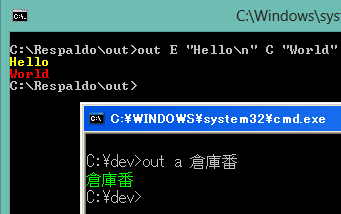

Page 2 of 3
Re: Color Function 21 22 23c
Posted: 10 May 2015 18:55
by carlos
@Saso your code example works as you says when the console screen buffer size is 80, because the line is too long, it write to the next line, and because it, not all garbage characters are ere ased, because you only can erase characters in one line.
Try your example using 120 columns in the console screen buffer and with 80 columns.
I'm thinking how solve this.
For the moment, a fix would be use 120 columns.
Re: Color Function 21 22 23c
Posted: 12 May 2015 01:11
by miskox
Thanks. I hope there is a solution.
Saso
Re: Color Function 21 22 23c
Posted: 19 May 2015 14:51
by carlos
Saso, another alternative is my new program out.exe
It is more faster and not have the limitations of the function color.
It output all the text in unicode.
Edit: Updated to v1.1

The arguments are:
Code: Select all
out.exe text
out.exe hex_color text ...
The text accept the next regular expressions:
Code: Select all
\b backspace
\r carriage return
\d new line
\t horizontal tab
test.cmd
Code: Select all
@Echo Off
SetLocal EnableExtensions
If Not Exist OUT.EXE (
Call :Rebuild
If ErrorLevel 1 (
Echo Rebuild failed.
Goto :Eof
)
)
out 0E " SOME TEXT TO DISPLAY HERE IN COLOR\n"
out 0E " SOME TEXT TO DISPLAY HERE IN COLOR\n"
out 0E " SOME TEXT TO DISPLAY HERE IN COLOR\n"
Goto :Eof
:Rebuild
Rem Script made using BHX 5.6 { consolesoft.com/p/bhx }
SetLocal EnableExtensions EnableDelayedExpansion
Set "bin=OUT.CAB"
Set /A "size=1296"
Rem Source code of out v1.1 at: consolesoft.com/p/out/out.txt
For %%# In (
"OUT.EXE"
"!bin!" "!bin!.da" "!bin!.tmp"
) Do If Exist "%%#" (Del /A /F /Q "%%#" >Nul 2>&1
If ErrorLevel 1 Exit /B 1 )
Set "fsrc=%~f0"
Findstr /B /N ":+res:!bin!:" "!fsrc!" >"!bin!.tmp"
(Set /P "inioff="
Set /P "endoff=") <"!bin!.tmp"
For /F "delims=:" %%# In ("!inioff!") Do Set "inioff=%%#"
For /F "delims=:" %%# In ("!endoff!") Do Set "endoff=%%#"
Set ".=ado="adodb.stream""
Set ".=!.! :set a=createobject(ado) :a.type=1 :a.open"
Set ".=!.! :set u=createobject(ado) :u.type=2 :u.open"
Set ".=!.! :set fs=createobject("scripting.filesystemobject")"
Set ".=!.! :set s=fs.opentextfile("!fsrc!",1,0,0)"
Set ".=!.! :e="0123456789abcdefghijklmnopqrstuvwxyzABCDEF"
Set ".=!.!GHIJKLMNOPQRSTUVWXYZ.-:+=^^`/*?&<>()[]{}~,$#"
Set ".=!.!" :max=!size! :wri=0 :n=array(0,0,0,0,0)"
Set ".=!.! :for i=1 to !inioff! step 1 :s.readline :next"
Set ".=!.! :do while i<!endoff! :d=replace(s.readline," ","")"
Set ".=!.! :for j=1 to len(d) step 5 :num85=mid(d,j,5)"
Set ".=!.! :v=0 :for k=1 to len(num85) step 1"
Set ".=!.! :v=v*85+instr(1,e,mid(num85,k,1))-1 :next"
Set ".=!.! :n(1)=Fix(v/16777216) :v=v-n(1)*16777216"
Set ".=!.! :n(2)=Fix(v/65536) :v=v-n(2)*65536"
Set ".=!.! :n(3)=Fix(v/256) :n(4)=v-n(3)*256"
Set ".=!.! :for m=1 to 4 step 1 :if (wri < max) then"
Set ".=!.! :u.writetext chrb(n(m)) :wri=wri+1 :end if :next"
Set ".=!.! :next :i=i+1 :loop"
Set ".=!.! :u.position=2 :u.copyto a :u.close :set u=nothing"
Set ".=!.! :a.savetofile "!bin!",2 :a.close :set a=nothing"
Set ".=!.! :s.close :set s=nothing :set fs=nothing"
Echo !.!>"!bin!.da"
Set "ret=1"
Cscript.exe /B /E:vbs "!bin!.da" >Nul
For %%# In ("!bin!") Do If "%%~z#"=="!size!" Set "ret=0"
If "0"=="!ret!" Expand.exe -r "!bin!" -F:* . >Nul
If ErrorLevel 1 Set "ret=1"
Del /A /F "!bin!" "!bin!.da" "!bin!.tmp" >Nul
Exit /B !ret!
:+res:OUT.CAB:
o&BzG000005cS4l00000ec2UI000000,5A50rr9100000l&Wh`0rrim01Ybg
00000006w}nc]m~pGpvDmoz$U(qS&z.#{5Kty.l-0u.NDJNE)A001/107u>/
CvaJ$T)5*pV$I,vwUo-LThG]~9u~7$8S`Y^FvfK4?QVb^WB:`?IdKEBguUL8
5~}+HaB<PKl7**#m<LetE9,polikZs8x,XE2.Aq.01Yehbn*G>c<e,.~KD{B
.Ri]/?V?,H(&mxE1X:<Z4z{wS3Q??`fSIGb5#VCw<n.?rz:D-n,gGK,00000
bM`cl,1Gu04-J8YP]z:woAFd4ssb6zy+<Rke+Q)l4<2[e<)tick*?Grg1Mwf
6PFQ&O5.K$tn2itslH?-I&/s[c[y$isY=8GD)fA4evj8+RTd#BhI~^{l)Sg,
dnzpReo~]~Z`=MRJ6I~cJrIDFj=B&xf>w,^c{kWWEUbCf3-x&:4phFltjjAB
.V/sq1+-brA/*k>N9)Y?=4kXK4YOs$z.d*eV65j.=0(gTkG`N]~dPVTqLG>I
W]R37aVNzEcY~J7~u,5`6M(3TO<dUA(iD=,k#gkcuMmMo19HRr<uxu=JN)Eg
y)~+}mysztnrvY25./VT-=-FD//dsB`u]3N1oL<ZHI~TygDR,Wt&b^~.,9)/
v=2>~4x9<H?tEL)hW}s1BMwmCA7ehv2z}L+9p}f>cuR&fu3r=MW+q`$xp</h
dP(H,]ZhP{`b7<X/c^fd`^rqTu#MXp+kodB?>#M991JT(md/KU)m/$:/9n`a
sId`-ddBHZsy.m,2JyDjah*EXBS`J=n7JW`?DsZ4mrY,PWIO761S^tw6KSB4
i,3nti-Pz=fwX+hle1?c:}RYLGnT=+*u=1,J.OG8*>5=W1M5x=W~Dw-bRJv3
=lCpcp3#(lD/(^h/Jxnk:zn)Td:3-?)08s,*Wv)GpW,DYw7(2OT(^ZKCq{{O
dK>T0vpDbQ&l1I((m.`o7xp)&`UzgzvQ67r</zP{MFgc0c?21HZBk1j5XCBT
gwJ-68P<[?NB]Qm=G,(B]a5a)}Za3n8d8Z~m}]VSDjdw=YR({0~eKPlP}57p
}HseUDs<XHh&v2yoq+pX>Ilw-V`A0?9{7?3f?D?(dLC*xBdIw)?{g~o7Q6R:
et14Bd)hL}b,6o#.ZhXkp$Khj}K)R{g>d]tlu[zdQ#}Po*+9TSOoaHS9wOM9
(-VtfD-63:{ILq)*gdZbX<,bu8<QYP]Vu}Kxk/JuOncWV>08Ev~D5SGw:htt
bR[LC:p^W{&7}w>GL]~ti^gS[vRcVKo}l:TGjBaHCE[$wmn)>xNK&e3i9<[`
.~/`-T0aVv<Xg<,L7ju*eXQBZ?=p>NG*2c9]G0pixb:,zB*$R9,3qGOxm8?9
f3Bh/SsqRu{E&l&-GJo?OdCPqHA{MGgtr]NOe#x1]}8vx/Y$4ysGz<nF+3sI
n>-U}T5uTkirf=fe(LX66C-Cc4p>u7f?IHefXK{^7Gsm$y&VVeK11mo0m<4k
`JtqI~L83UJa2H-Fu~LdWr:rGLQvn.U[`1j*as3KvxGO]N,pj]M^G2yIBAYp
Wep+u3/Qz)eB`?dHjOG,kT[}W[P&.^Nj7}0^K*sFEq#]bc5*myRlW}RWu{8>
:+res:OUT.CAB:
Re: Color Function 23c
Posted: 12 Nov 2015 12:52
by Docfxit
I have tried to use the color function v23c.
I'm having unpredictable results.
Does anyone know what I am doing wrong?
These are the results I am getting:
Color A
Color B
Color C
Color D
Color E
Color F
FINDSTR: /G ignored
Color G
FINDSTR: /H ignored
Color H
Color I
FINDSTR: /J ignored
Color J
FINDSTR: /K ignored
Color K
Color L
Color M\..\`
Color N\.
Color O\.
This is my code:
Code: Select all
@Echo Off
Cls
Color 17
::Call :Color A "######" \n E "" C " 23 " E "!" \n B "#&calc" \n
Call :Color 1A "Color A" \n
Call :Color 1B "Color B" \n
Call :Color C "Color C" \n
Call :Color D "Color D" \n
Call :Color E "Color E" \n
Call :Color F "Color F" \n
Call :Color G "Color G" \n
Call :Color H "Color H" \n
Call :Color I "Color I" \n
Call :Color J "Color J" \n
Call :Color K "Color K" \n
Call :Color L "Color L" \n
Call :Color M "Color M" \n
Call :Color N "Color N" \n
Call :Color O "Color O" \n
exit /b 1
::***********************The subroutines are:
:Color
:: v23c
:: Arguments: hexColor text [\n] ...
:: \n -> newline ... -> repeat
:: Supported in windows XP, 7, 8.
:: This version works using Cmd /U
:: In XP extended ascii characters are printed as dots.
:: For print quotes, use empty text.
SetLocal EnableExtensions EnableDelayedExpansion
Subst `: "!Temp!" >Nul &`: &Cd \
SetLocal DisableDelayedExpansion
Echo(|(Pause >Nul &Findstr "^" >`)
Cmd /A /D /C Set /P "=." >>` <Nul
For /F %%# In (
'"Prompt $H &For %%_ In (_) Do Rem"') Do (
Cmd /A /D /C Set /P "=%%# %%#" <Nul >`.1
Copy /Y `.1 /B + `.1 /B + `.1 /B `.3 /B >Nul
Copy /Y `.1 /B + `.1 /B + `.3 /B `.5 /B >Nul
Copy /Y `.1 /B + `.1 /B + `.5 /B `.7 /B >Nul
)
:__Color
Set "Text=%~2"
If Not Defined Text (Set Text=^")
SetLocal EnableDelayedExpansion
For %%_ In ("&" "|" ">" "<"
) Do Set "Text=!Text:%%~_=^%%~_!"
Set /P "LF=" <` &Set "LF=!LF:~0,1!"
For %%# in ("!LF!") Do For %%_ In (
\ / :) Do Set "Text=!Text:%%_=%%~#%%_%%~#!"
For /F delims^=^ eol^= %%# in ("!Text!") Do (
If #==#! EndLocal
If \==%%# (Findstr /A:%~1 . \` Nul
Type `.3) Else If /==%%# (Findstr /A:%~1 . /.\` Nul
Type `.5) Else (Cmd /A /D /C Echo %%#\..\`>`.dat
Findstr /F:`.dat /A:%~1 .
Type `.7))
If "\n"=="%~3" (Shift
Echo()
Shift
Shift
If ""=="%~1" Del ` `.1 `.3 `.5 `.7 `.dat &Goto :Eof
Goto :__Color
Thank you,
Docfxit
Re: Color Function 23c
Posted: 25 Nov 2015 18:01
by foxidrive
Docfxit wrote:I have tried to use the color function v23c.
I'm having unpredictable results.
Does anyone know what I am doing wrong?
Code: Select all
Call :Color 1A "Color A" \n
Call :Color 1B "Color B" \n
Call :Color C "Color C" \n
Call :Color D "Color D" \n
Call :Color E "Color E" \n
Call :Color F "Color F" \n
Call :Color G "Color G" \n
Call :Color H "Color H" \n
Call :Color I "Color I" \n
Call :Color J "Color J" \n
Call :Color K "Color K" \n
Call :Color L "Color L" \n
Call :Color M "Color M" \n
Call :Color N "Color N" \n
Call :Color O "Color O" \n
Thank you,
Docfxit
Your color codes need to be specified in hexadecimal - which is only numbers from 0 - 9 and letters A - F
See the help from
color /?
Re: Color Function 21 22 23c
Posted: 25 Nov 2015 19:31
by Docfxit
Thanks,
Now I understand what happened.
Thanks,
Docfxit
Re: Color Function 21 22 23c
Posted: 26 Nov 2015 09:30
by Erik Bachmann
does not solve the problem. Makes windows "jump" to another size and the screens blinks.
Is it possible to truncate the string at col 80?
Re: Color Function 21 22 23c
Posted: 04 Dec 2015 12:05
by thefeduke
I am such an enthusiastic user of this wonderful function that when I changed the font size of my 'DOS Prompt' to help my poor old eyes, I also made the following change :
I changed the 'Width' field in the 'Screen buffer size' box of the 'Layout' tab of the 'Properties' of a copy of the 'DOS Prompt' shortcut from 80 to 120 for my general use.
I also suggest that the user keep track of the width of the displayed string(s) to avoid having to scroll to the right to see the whole line.
Edited by John A. The original example only demonstrated an approach. I left unnecessary complications from a work-in-progress. Working independent code now follows:Code: Select all
@Echo Off &SetLOCAL EnableDelayedExpansion &Rem.Keep environment uncluttered.
:: Create Argument Array
Set "ArgArr{0}=8"
Set "ArgArr{1}=one1"
Set "ArgArr{2}=two22"
Set "ArgArr{3}=three333"
Set "ArgArr{4}=four4444"
Set "ArgArr{5}=five55555"
Set "ArgArr{6}=six666666"
Set "ArgArr{7}=seven7777777"
Set "ArgArr{8}=eight88888888"
:: Display Argument Array using 'Set /P and Call :color
For /F "delims=#" %%a in ('"prompt #$H# &echo on &for %%b in (1) do rem"') Do (Set "{bs}=%%a")
Echo.
<nul Set /p "=["
Call :color 0F "Arguments: "
Set "Wide=11"
For /L %%A in (1,1,%ArgArr{0}%) do (
set ArgX=%%A
Call Set "x=%%argArr{!ArgX!}%%"
CALL :strlen x ArgLen
Set /A Wide=!Wide!+!ArgLen!+2
IF !wide! GTR 72 (
Echo.
Set /A Wide=!ArgLen!+2
)
set /a rmder=%%A%%2
if /i "!rmder!" EQU "0" (
Call :color 0B "!x!"
) Else (
Call :color 0E "!x!"
)
<nul Set /p "=, "
)
If %ArgArr{0}% GTR 0 (
Echo(%{bs}%%{bs}%]
) Else (
echo.No arguments for %~nx0%]
)
Exit /B
:Color
:: Color v23
:: Arguments: hexColor text [\n] ...
:: \n -> newline ... -> repeat
:: Supported in windows XP, 7, 8.
:: This version works using Cmd /U
:: In XP extended ascii characters are printed as dots.
:: For print quotes, use empty text.
SetLocal EnableExtensions EnableDelayedExpansion
Subst `: "!Temp!" >Nul &`: &Cd \
SetLocal DisableDelayedExpansion
Echo(|(Pause >Nul &Findstr "^" >`)
Cmd /A /D /C Set /P "=." >>` <Nul
For /F %%# In (
'"Prompt $H &For %%_ In (_) Do Rem"') Do (
Cmd /A /D /C Set /P "=%%# %%#" <Nul >`.1
Copy /Y `.1 /B + `.1 /B + `.1 /B `.3 /B >Nul
Copy /Y `.1 /B + `.1 /B + `.3 /B `.5 /B >Nul
Copy /Y `.1 /B + `.1 /B + `.5 /B `.7 /B >Nul
)
:__Color
Set "Text=%~2"
If Not Defined Text (Set Text=^")
SetLocal EnableDelayedExpansion
For %%_ In ("^" "&" "|"
) Do Set "Text=!Text:%%~_=^%%~_!"
Set /P "LF=" <` &Set "LF=!LF:~0,1!"
For %%# in ("!LF!") Do For %%_ In (
\ / :) Do Set "Text=!Text:%%_=%%~#%%_%%~#!"
For /F delims^=^ eol^= %%# in ("!Text!") Do (
If #==#! EndLocal
If \==%%# (Findstr /A:%~1 . \` Nul
Type `.3) Else If /==%%# (Findstr /A:%~1 . /.\` Nul
Type `.5) Else (Cmd /A /D /C Echo %%#\..\`>`.dat
Findstr /F:`.dat /A:%~1 .
Type `.7))
If "\n"=="%~3" (Shift
Echo()
Shift
Shift
If ""=="%~1" Del ` `.1 `.3 `.5 `.7 `.dat &Goto :Eof
Goto :__Color
:strLen string len -- returns the length of a string
@Echo Off
:: -- string [in] - variable name containing the string being measured for length
:: -- len [out] - variable to be used to return the string length
:: Many thanks to 'sowgtsoi', but also 'jeb' and 'amel27' dostips forum users helped making this short and efficient
:$created 20081122 :$changed 20101116 :$categories StringOperation
:$source http://www.dostips.com
( SETLOCAL ENABLEDELAYEDEXPANSION
set "str=A!%~1!"&rem keep the A up front to ensure we get the length and not the upper bound
rem it also avoids trouble in case of empty string
set "len=0"
for /L %%A in (12,-1,0) do (
set /a "len|=1<<%%A"
for %%B in (!len!) do if "!str:~%%B,1!"=="" set /a "len&=~1<<%%A"
)
)
( ENDLOCAL & REM RETURN VALUES
IF "%~2" NEQ "" SET /a %~2=%len%
)
EXIT /b
Erik Bachmann
I simply do not understand your example!

Are you intending to convert the output string into an array - and the print the characters one by one?

How would this solve the position72-80 problem?
Please supply a complete example
The array was input and is now simulated with 'Set' commands.
John A.
Re: Color Function 21 22 23c
Posted: 04 Dec 2015 13:54
by Erik Bachmann
I simply do not understand your example!
Are you intending to convert the output string into an array - and the print the characters one by one?
How would this solve the position72-80 problem?
Please supply a complete example
Re: Color Function 21 22 23c
Posted: 05 Dec 2015 02:50
by foxidrive
To John: people that read forums like dostips using the "find unread posts" feature, will not see your edited post.
I only saw it because I hadn't yet read this thread.
Erik may see this reply, and then re-read your post - a solution is to post a brief followup message saying "the post above has been edited"
Re: Color Function 21 22 23c
Posted: 27 Mar 2016 14:47
by ebloch
Great function for which I offer a small addition to simplify the CALL and help my memory for text color.
Add the following at the beginning before :Color and then one can use the original CALL or a CALL without the \n and use R for red and G for green text.
Set "_CLR=%1"
IF "%1"=="R" Set "_CLR=C"
IF "%1"=="G" Set "_CLR=A"
CALL :COLOR %_CLR% %2 \n
GOTO _End
Re: Color Function 21 22 23c
Posted: 01 Apr 2016 15:08
by thefeduke
ebloch wrote:Great function for which I offer a small addition to simplify the CALL and help my memory for text color.
Rather than messing with a good thing, I suggest considering ":getColorCode - converts color text to color code" from the DosTips function library at
http://www.dostips.com/DtCodeCmdLib.php#getColorCode to assist. You can easily add text abbreviations for your use before you call the color function.
John A.
Re: Color Function 21 22 23c
Posted: 01 Apr 2016 16:53
by ebloch
I did not know of the batch you mention when I decided to make my COLOR.bat.
I have many batch files using the original call to a color subroutine so the total storage required is growing and, most important, if a change in the subroutine is needed too many places to find and change.
I decided to use an easier to remember color designation and simplify where possible while still accepting the original call. I only use Light Red and Light Green so "R" and "G" work for me.
Re: Color Function 21 22 23c
Posted: 30 Apr 2016 16:00
by thefeduke
Is it possible to redirect the output of the Color Function and of the OUT program to a file and then to reconstruct the output for colorized viewing later? I made some novice attempts using TYPE and an ECHO withing FOR with limited monochrome success with 'Call :color' and none at all with 'OUT'. Here is a bit of output and a peek at the print file:
Code: Select all
[Arguments: one1, two22]
Bright Yellow
Not Colorized
Turquoise
:: THE PRECEDING LINES WERE COLORIZED APPROPRIATELY
Output from Type SaveColor.txt
[Arguments: one1, two22]
Bright Yellow
Not Colorized
u r q u o i s e
Output from file: 'SaveColor.txt'
Item=[Arguments: one1, two22]
Item=Bright Yellow
Item=Not Colorized
Code: Select all
****** ******************************* Top of Data *********************************
------------------------------------------------------------------------------------
000001
22222222222222222222222222222222222222222222222222222222222222222222222222222
00000000000000000000000000000000000000000000000000000000000000000000000000000
------------------------------------------------------------------------------------
000002 [Arguments\..\`:.� �� �� �� �� �� �� �:\..\`:.� �� �� �� �� �� �� � \..\`:.�
54767666775225632020020020020020020020352256320200200200200200200202522563202
B1275D5E43CEEC0AE808808808808808808808ACEEC0AE8088088088088088088080CEEC0AE80
------------------------------------------------------------------------------------
000003 Bright Yellow\..\`:.� �� �� �� �� �� �� �
47666725666675225632020020020020020020020222222222222222222222222222222222222
229784095CCF7CEEC0AE808808808808808808808000000000000000000000000000000000000
------------------------------------------------------------------------------------
000004 Not Colorized
46724666767662222222222222222222222222222222222222222222222222222222222222222
EF403FCF29A540000000000000000000000000000000000000000000000000000000000000000
------------------------------------------------------------------------------------
000005 T
****** ****************************** Bottom of Data *******************************
=> NOTE line 000005 contains T u r q u o o i s e <= (X'00' between letters)
An attempt at copy just crashed CMD. Can anything be done with those binary zeroes to get even monochrome readable output?
John A.
Re: Color Function 21 22 23c
Posted: 25 Aug 2018 16:25
by CirothUngol
Cool little color routine! I'm still picking apart v23c, super neat how it works.
I'm looking to divorce my latest project from it's dependence on auxiliary programs before posting it and was wondering if this would still be considered the best method of displaying color text to the console using native WinNT batch script. I know I can use executables and other forms of script, but I was looking at pure native solutions first.
Off topic, is there also a quick and efficient native solution for locating the cursor at specific location in the console window?
I strongly suspect that the only satisfactory solution will be an external one, but I'm looking at native alternatives anyway. ^_^